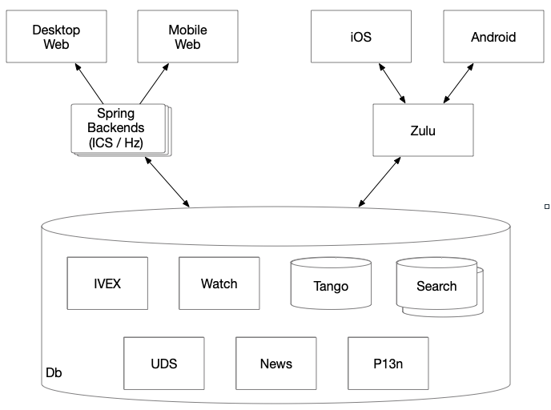
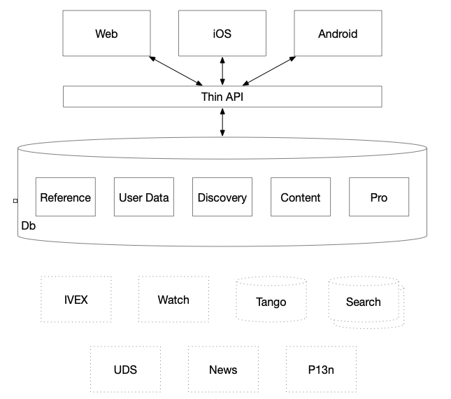
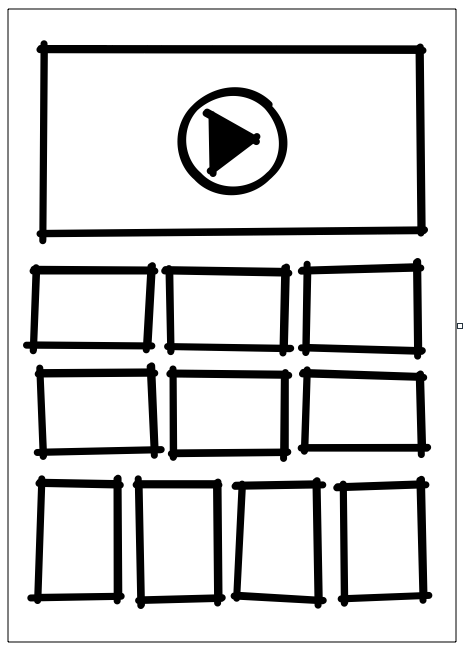

Module 2 - Service Design
Module Overview
Explore service design principles and best practices for building scalable applications.
Learning Objectives
- Identify whether AWS Lambda should not be used as the architecture for a set of business requirements
- Identify trade-offs of using each of a set of alternative technologies in a provided design document to solve a specified business problem
- Make a service design recommendation based on a trade-off analysis
- Compare Lambda against other AWS Compute options
- Outline the use case for the adapter, facade, proxy, notifier, and aggregator service design patterns
Introduction to Service Design
Service design is the process of applying your technical knowledge to build services that solve business problems. It involves selecting the right technologies, balancing requirements, and researching potential solutions.
The Service Design Process
- Gather Requirements: Collect the functional and non-functional requirements for the problem you aim to solve.
- Break Down Components: Divide the system into smaller, manageable subsystems and services.
- Compare Alternatives: Evaluate multiple potential solutions by weighing their pros and cons.
- Document and Review: Create a design document and get feedback through design reviews.
Practical Service Design Principles
- Don't Reinvent the Wheel: Reuse existing components rather than building from scratch when possible.
- Simplicity Over Complexity: Follow standard patterns rather than creating overly complex solutions upfront.
- Limit Access to Data Stores: Create "gatekeeper" components that control access to data stores to prevent conflicts.
- Build in Layers: Design components to add complexity in layers, keeping each component simpler and more modular.
When comparing technologies like AWS Lambda vs. other AWS Compute options (ECS, EC2), consider factors such as operational maintenance, flexibility, and specific requirements like statelessness, execution time limits, and memory constraints.
Introduction
You've learned a lot about programming. You've learned a lot about AWS technologies and general development practices. Service design takes that knowledge and applies it to building services that solve business problems. In this reading we'll go over service design principles and patterns. We'll also show you how to compare different potential solutions, and how to document your design.
Service design process
Solving business problems often requires us to put together different technologies, services, and other components into a cohesive design. We need to apply our knowledge of different tools and technologies to solve the problem. We must also balance different functional and non-functional requirements. As our industry is constantly evolving, solving problems also requires us to research new tools as potential solutions.
Gather requirements
Before we can start on our design, we must collect the requirements for the problem we intend to solve. For smaller technical projects, we may be responsible for gathering these ourselves. When the project is large and/or customer facing, requirements will often be provided by a Product Manager or Technical Project Manager who has spent time reviewing our customers' needs. Once we have our requirements, we can begin.
Break down components
Once we have our requirements, the first step in designing our service is to break the problem down into component pieces. If we are designing a large system (for example, the video ingestion process for Prime Video), this could mean defining smaller subsystems/services that will make up the whole (such as video upload and storage, media rental/purchase licensing, and detail page creation), each of which will be fleshed out in its own design document. In the design documents for these smaller services, the components might be the general structure of our code, the main classes we expect to build and how they interconnect. We also consider whether and how we might reuse existing services to avoid duplicating effort. Many problems will have multiple potential solutions. Before we continue, we do our best to capture all reasonable design options.
Compare alternatives
Once we have a set of potential solutions, we weigh the pros and cons of each to decide on the best approach. In our designs, we often have to strike a balance between competing goals. Maintainability, scalability, and usability are important goals. Security, simplicity, and extensibility are also essential. Depending on the specific case, any of these properties could be in direct opposition to another. Time, people, and cost are three other limiting factors in any project. The best solution may not be possible while managing these limiting factors. In fact, no solution will ever be perfect. The best solutions are those that meet the business needs while finding a balance between our various competing goals and limitations. A successful solution should leave all stakeholders happy with what was built (even if they would still like more).
As we weigh our options and come to a decision about our design, we need to document our recommendation. We communicate the details of the business problem and our proposed implementation in the design document. The design document captures the details of our solution, our reasoning for choosing that solution, and brief descriptions of alternatives considered and why they weren't chosen. This culminates in a design review. Just like a code review, a design review provides feedback and approval from the team and senior engineers. Once approved, implementation can begin!
Example: Service design
Before going into the details of service design, let's set up an example to step through the design process. Picture a new movie service where users can search for movies to stream, rent digital versions or order a physical copy. Our service ties together a few different existing services. It needs to talk to the User Account service, Payment service, and Movie Inventory service. It also needs to interface with an external Movie Info service. We'll also have external clients for searching, renting, and ordering movies. Internally, we'll have clients to manage the movies and movie data in a data source specific to this service. With this example in mind, let's review some practical service design principles.
Practical service design principles
In many professions, there are principles you learn as you gain experience. Software development is no exception. What follows are some basic principles to keep in mind when thinking about service design.
Don't reinvent the wheel
If we have an existing component, reuse it rather than building from scratch. We save development time and lower maintenance cost through reuse.
Sometimes, we have a component that is close to what we need, but would require some modification. In this case, rely on developers on your team with more experience for guidance. If the responsibilities of that service are consistent with what we need, but it is lacking certain features, it may be appropriate to add functionality to that service to fit our needs. However, just because an existing service is close to what we need doesn't mean we should bolt on more functionality, particularly if that new functionality is not related to the purpose that service fulfills.
Simplicity over complexity
It can feel impressive to design a solution with many complex pieces. However, complex designs are often hard to maintain and update. In most cases, it's better to follow standard patterns and interactions rather than specialize everything up front, even if that might mean less performant code. We can identify areas that need complex or specialized solutions by testing performance and stability once we have the basic structure in place. It's better to add complexity only where we need it, not have it baked into the whole system from the start.
Limit access to data stores
Allowing multiple components to make updates to the data store is a common mistake in service design. If multiple components have write access to the same data store, they may conflict with each other and cause errors. Instead, we can make a component act as the gatekeeper for the data store (like the DAOs you see in your projects and classwork). Because the gatekeeper is an avoidable component, this may seem like adding complexity. In fact, by managing all access in one component, we prevent contention and inconsistency. We also abstract away the details of the data store, so any changes affect only the gatekeeper instead of all the components that access the data. Limiting data store access to a single component actually simplifies the overall service.
Build in layers
When we add a gatekeeper in front of a data store, it follows another common design principle. Design components to add complexity in layers. That way, we can keep each component simple and modular. Monolithic design, where components handle multiple functions (like retrieving data from a data store as well as performing some business logic), requires custom components for each business problem. By breaking the components up into layers with less specialized concerns (in this example, one to retrieve data, one to perform the business logic), we create components with more potential for reuse.
Example: A Movie Service design
By taking practical service design principles and applying them to the Movie Service example, we can come up with a design that meets the requirements. You can see our initial design in Figure 1. While the diagram includes technologies used for each component, we will cover how to choose technologies for components later in this reading.

In this design, we are managing the Movie DB with a single component, the Movie Service. We'll start the design simple by allowing the Movie Service to connect to all the other backend and third party components. External and internal clients can access the service through the same Movie Service interface. This design is fairly straightforward, but it may require a lot of logic in the Movie Service. Let's see if there are other service design principles we can apply to come up with an alternative.
Service patterns
Throughout the history of software development, many design patterns have been developed to solve common problems. Many of these patterns apply to service design. Think of design patterns as building blocks for your designs. Something these patterns have in common is that they implement a small piece of logic. While these patterns are useful tools to use in designing your solutions, don't blindly use them just because you can. You should understand why you are choosing to use a given pattern and what benefits it brings. Otherwise, you run the risk of overengineering your solution and adding complexity where it is not needed.
Adapter, facade, and proxy patterns
These three design patterns are similar, as each adds a separate interface over an existing service. The intent with each of these patterns is to allow clients to connect to a service or interface while providing some additional value. Depending on the pattern, we can improve compatibility, provide simplification, or extend functionality.
The adapter pattern
Our first pattern, the adapter, improves compatibility. It bridges incompatible interfaces and allows them to work together. For example, let's say we were pulling movie information from a Movie Inventory Service that identified movies using a SKU (stock keeping unit). If our service used a generated UUID to identify a movie, we would need to translate from SKU to UUID every time we pulled information from the Movie Inventory Service. For a problem such as this, we would create an adapter to handle the translation. That way, the rest of our Movie Service code wouldn't need to be aware of SKUs, only the adapter for the Movie Inventory Service.
The facade pattern
If we want a simplified version of an existing interface, we can turn to our second pattern, the facade. For example, let's say our Movie Service supports the standard create, read, update, and delete operations, but we want external clients to only be able to read data. To accomplish this, we can create a client that only exposes read functionality, i.e. a read-only version. This read-only client becomes a facade, or the "face" of our service.
Note: there are alternatives to this pattern, such as controlling user's access within our Movie Service. It's important to consider multiple solutions when designing your service.
The proxy pattern
We use the proxy pattern to provide additional functionality to an interface without touching the original. Proxies are commonly used to protect an application from changes outside of our control. A proxy in front of external or vendor supplied services can isolate a change in one component instead of allowing the change to spread throughout other components in our application. Since the Movie Info Service is a 3rd party application, we can use a proxy service that our Movie Service calls instead.
The notifier pattern
We use the notifier pattern when we need a flexible way to listen for events and be notified when they occur. Typically, this is handled by a service for registering interested parties, a listener for events, and logic that sends updates to the interested parties when events occur. The notifier pattern allows multiple parties to register for notifications, and decouples event occurrence from the sending of notifications. Amazon CloudWatch is like a giant notifier service. It can collect data when events occur anywhere in your AWS account, and it can be configured to trigger other actions when certain events are logged.
The aggregator pattern
The aggregator pattern gathers data from different sources and builds a combined response from the resulting calls. This simplifies client logic by keeping all the retrieval and aggregation code separate. Instead of making multiple calls to various data sources, the client makes one request and receives all the data it needs. Aggregators are common in situations where we have multiple places in our code that need a set of data that comes from many sources, or where the retrieval of that data requires complex logic.
Example: Service design with patterns
![Figure 2: Version 2 of the Movie Service component diagram. External web clients access the Movie Service (Lambda) through a Movie Service Client Facade, while internal web clients access Movie Service directly. Movie Service manages a Movie DB (DynamoDB) and accesses a Movie Service Aggregator (Lambda). The Movie Service Aggregator accesses User Account Service (Internal Application), Movie Inventory Service (Internal Application), Payment Service (Internal Application). It also accesses Movie Info Service (3rd Party Application) through Movie Info Proxy Service (Lambda).](https://tk-assets.lambdaschool.com/ba3712e5-1c5f-4170-8db7-b8b1debad28c_image2.png)
In this design, we've added more layers to our service design. There's still a central Movie Service with a Movie database. However, we added a facade (Movie Service Client Facade) to expose only the operations needed to external clients. We also added a proxy in front of the third party Movie Info service. A new aggregator component (Movie Service Aggregator) gathers data from the three internal and one external source. Now the Movie Service only needs to manage the Movie database and access the aggregator service.
We've shown examples of using the patterns, but this is for a hypothetical service with its own set of requirements. When designing, it's important to only apply these patterns when a problem comes up that blocks the key attributes of a service like maintenance, scalability, etc. Keep in mind the original problem you set out to solve, and incrementally use these patterns as your service grows. Overengineering is a very real and easy anti-pattern to fall into.
Trade-offs
Once we have some ideas for potential solutions, we evaluate those solutions to compare their pros and cons. By putting together lists of the strengths and weaknesses of each solution, we can better compare alternatives to each other. This more detailed analysis could reveal that an idea we favored has a flaw that makes it a bad fit, or that an out-there solution we thought probably wouldn't be best actually provides unexpected benefits. Options with weaknesses where it comes to long-term maintenance, extensibility, and costs accrue technical debt. Think of technical debt as the penalty incurred for choosing the quick and easy option now instead of a more involved option with a better long-term outlook. However, the opposite can happen as well -- overengineering a solution that splits the components into too many or too complex pieces can make it difficult to understand and maintain the service.
Next, we compare our options and choose one to recommend. By providing the alternatives we considered and the reasons we prefer our recommendation, we invite other developers to provide insight while simultaneously avoiding questions about trade-offs we've already considered. We compile all the options, considerations, and our final recommendation into a design document.
Example: Trade-off analysis
Since we have two design alternatives for our Movie Service, let's compare the trade-offs of the first Simple Design vs the second Patterned Design.
Design Comparison
Simple Design
- Fewer components to maintain
- Cheaper to build
- Fewer interfaces to design
- Less data moving among components
Patterned Design
- More opportunities to reuse pieces
- More components to use in performance tuning
- More resistant to changes in source systems (with aggregator and proxy)
- More secure with facade
- Easier to break up work among a team
- Components individually have simpler logic requirements
Based on what we know of our Movie Service, the patterned design seems preferable. However, a design with more pros doesn't necessarily mean it will be the best recommendation. For example, it might make sense to incrementally evolve the simple design into something that looks more like the patterned design as your service grows. There's no one-size-fits-all or "best" solution, these patterns are more tools for you to use to solve problems throughout your software development career.
Design review
To communicate our recommendation and get feedback from our team and other stakeholders, we create a service design document that describes the design and discusses its strengths and weaknesses. We also discuss potential alternatives, especially why we prefer our recommendation. Our goal is to answer any questions our teammates may have about the design, from alternative options they might recommend to how we plan to address or mitigate the weaknesses our recommended solution has. The completed document will then be used to perform a design review with senior engineers. As with a code review, they may provide feedback that we need to address. Once a satisfactory design is created, documented, and approved, development on our service can begin.
Design document contents
We always begin a design document by describing the problem being solved. It should not be a regurgitation of the requirements, but we do want to provide a summary of the project and some of the major requirements.
After the problem description, we want to outline the proposed solution. Our solution section should include a diagram of the components with lines and labels showing how the components interact. Use the rest of this section to describe what each component does. It's a good idea to include a subsection outlining the pros and cons of the design. We also want to include reasoning for choosing this design over other alternatives.
In the last section of the design document, we provide design alternatives. These may be completely different from the recommended design or provide different options for just parts of the recommended design. Each of these alternatives should include at least a short description, and maybe a component diagram. Be sure to highlight the differences from the recommended design. You should summarize the pros and cons for each alternative, and explain your reasoning for not choosing this alternative over your recommendation. Our purpose in this section is to communicate viable alternatives and why we prefer the recommended design.
Design diagrams

Component diagrams are an important way to visually communicate each prospective design. Let's look at what they should include. Consider our example in Figure 3. First, the diagram should include a box for each service component. Each component should be named and include the relevant technology (e.g. Lambda, DynamoDB). We connect the components using directed lines indicating which services call which. For example, if a component calls multiple services behind the scenes, the diagram should show multiple lines with arrows pointing from that component to those services. The same is true for components accessing a data store.
For the alternative designs, we only need a simplified diagram showing the changed components in the layout. If a full diagram is shown, be sure to visually indicate which components are different with more than just text changes, like different colored boxes, or an outlined section. When we have clear diagrams, it's easier for reviewers to see differences between the alternative and the original.
In our two Movie Service examples, each has a component diagram showing what the components are, what technologies are needed, and where other components connect. Without the diagram, we'd have much more work trying to communicate the same information with just words. Think of the component diagram as the map with the description serving as the directions.
AWS technology comparisons
AWS offers many technology choices that we can use in our solutions. Many service design choices come down to deciding which technology to use when implementing a component. When comparing technologies, it's good to know where different options are better or worse for various roles in the architecture. For example, should we use AWS Lambda for running code in a service? Perhaps using Elastic Container Service (ECS) would be a better choice. Without thoroughly comparing the options, we could create fundamental weaknesses in our service that wouldn't show up until later in implementation or even after we've launched our service.
Lambda vs other AWS Compute options
When it comes to running code in the cloud, AWS has three major options. Our first option is Lambda, a serverless compute service. Lambda compute services require very little operational maintenance.
However, it also offers less flexibility compared to our other two options.
The second choice is ECS, a serverless container solution, like the docker containers we use for most ATA projects. ECS sits in the middle of the road when it comes to operational resources required and flexibility. Our third option is Elastic Cloud Compute (EC2). EC2 is a cloud-based virtual machine hosting service. EC2 offers the most flexibility, at the cost of requiring more resources devoted to running the operational aspects of the service. Most often at Amazon, teams will choose between Lambda or ECS.
Lambda services are the most common technology on AWS, so let's look more closely at how they function. Lambdas are serverless compute containers. We call them serverless because all the management of setting up and configuring a server is handled for us by AWS. All we need to do is write the code and deploy it. Lambda automatically spins up instances when requests come in to run the code. It creates more instances as needed to handle incoming requests. It's important to note that the operations written using Lambdas must be stateless, since they shut down between requests, so no state is shared between instances. This means each request is handled independently. Nothing is kept in memory between calls. If state must be kept, you would need to save it in a data store where all Lambda instances could access it. Lambda services have many benefits. They have low operational management requirements after deployment. They also have automatic scaling of services, and simplicity of creating services.
For small services and components, Lambda is the way to go. As long as you're using a language supported by the service (which include Java, Python, and Node.js, to name a few) and do not have special operational needs, then Lambda should be your choice. It's scalable and easy to develop for, plus the costs scale based on usage. That said, there are several areas where Lambda is not well suited:
- Components that cannot handle occasional warm-up times after a period of inactivity. As part of the automatic scaling, Lambda services may sometimes wind down all instances when no requests are coming in. When this happens, a new request will need to wait for a new instance to start up before being handled.
- Large, complex codebases or interactions that exceed the platform's limits. Some of the current limits include 3,008 MB maximum runtime memory, 15-minute operation timeout, 50 MB maximum zipped deployment package (250 MB unzipped), and 6 MB maximum request/response size (256 KB for asynchronous requests).
- Situations requiring more flexible operational configuration such as complex networking requirements or host configuration.
- Stateful services (though these components should be implemented using data stores). Recall that stateless services keep nothing in memory from one request to another. Stateful services are services that keep information in memory between calls.
- Operations that need to run for a long time. This is related to the platform limits, but it can be an issue if many other services are called behind the scenes while waiting to respond.
- Any services that need a long-running thread. When a Lambda instance finishes its execution, any background threads will also stop executing!
When creating a service design, we consider these factors when deciding whether to deploy our service on Lambda. As long as the service doesn't have any of the above requirements, Lambda is a good choice. Otherwise, we must choose ECS to fulfill our requirements.
DynamoDB vs RDS
Data stores are another major component in service design. AWS has many types of data stores. Two major options are DynamoDB and Amazon Relational Database Service (RDS). Choosing the right one for a service component impacts performance and cost. It also affects routine maintenance and future extensibility. In most cases, DynamoDB will be the best choice, but even it has its weaknesses.
- If you need to pull data using a great deal of complex sets of fields combined from multiple tables.
- If records will exceed DynamoDB's record size limit (400 KB).
- If the application absolutely requires a relational database (code framework or vendor software).
These are high-level overviews, more in-depth information can be found in the AWS documentation for all the services we talked about that can help you decide what technology to use.
Conclusion
Your service design skills will grow with time and experience. This reading provided some principles and patterns to assist you in designing services. Try to recognize these patterns as you work on existing services. Seeing them in action should help you understand when to apply them when designing new ones. In addition to this starter toolset, lean on the experience of others by running ideas by other engineers or subject matter experts. Keep in mind that designing a service is almost always a collaborative process. To that end, we also explained how to prepare for a design review by comparing various options and documenting your recommendations. Over time, your service design toolset will grow, especially as you learn new patterns, research new technologies, and work with other engineers.
Service Design Patterns
Throughout software development history, design patterns have evolved to solve common problems. These patterns implement specific pieces of logic and serve as building blocks for your designs.
Adapter Pattern
The adapter pattern improves compatibility by bridging incompatible interfaces to work together. It translates between different interfaces or data formats.
Example: Translating between different ID formats (e.g., converting SKUs to UUIDs) when integrating with other services.
public class InventoryServiceAdapter {
private InventoryService inventoryService;
public InventoryServiceAdapter(InventoryService inventoryService) {
this.inventoryService = inventoryService;
}
public MovieInfo getMovieInfo(UUID movieId) {
// Convert UUID to SKU format expected by inventory service
String skuId = convertToSku(movieId);
// Call the inventory service with the converted ID
InventoryItem item = inventoryService.getItem(skuId);
// Convert the result back to our domain model
return convertToMovieInfo(item);
}
private String convertToSku(UUID movieId) {
// Implementation details...
}
private MovieInfo convertToMovieInfo(InventoryItem item) {
// Implementation details...
}
}
Facade Pattern
The facade pattern provides a simplified interface to a complex subsystem. It hides the complexity by providing a single entry point that forwards requests to the appropriate components.
Example: Creating a simplified API that coordinates interactions with multiple microservices.
public class MovieRecommendationFacade {
private UserService userService;
private MovieCatalogService catalogService;
private RatingService ratingService;
// Constructor with dependencies injected
public MovieRecommendationFacade(UserService userService,
MovieCatalogService catalogService,
RatingService ratingService) {
this.userService = userService;
this.catalogService = catalogService;
this.ratingService = ratingService;
}
// Simplified API that coordinates multiple service calls
public List getRecommendationsForUser(String userId) {
User user = userService.getUser(userId);
List genres = user.getPreferredGenres();
// Get top-rated movies in user's preferred genres
List candidates = catalogService.getMoviesByGenres(genres);
// Filter and sort based on ratings
List ratings = ratingService.getRatingsForMovies(
candidates.stream().map(Movie::getId).collect(Collectors.toList()));
// Process and return final recommendations
return processRecommendations(candidates, ratings, user);
}
private List processRecommendations(
List movies, List ratings, User user) {
// Implementation details...
}
}
Proxy Pattern
The proxy pattern provides a surrogate or placeholder for another object to control access to it. It can add additional functionality like caching, access control, or logging.
Example: Implementing a caching layer in front of an expensive data retrieval service.
public class CachingMovieCatalogProxy implements MovieCatalogService {
private MovieCatalogService realCatalogService;
private Map> genreCache = new HashMap<>();
public CachingMovieCatalogProxy(MovieCatalogService realCatalogService) {
this.realCatalogService = realCatalogService;
}
@Override
public List getMoviesByGenres(List genres) {
// Create cache key (e.g., genres sorted and joined)
String cacheKey = genres.stream().sorted().collect(Collectors.joining(","));
// Check cache first
if (genreCache.containsKey(cacheKey)) {
return genreCache.get(cacheKey);
}
// Cache miss: get from real service and update cache
List movies = realCatalogService.getMoviesByGenres(genres);
genreCache.put(cacheKey, movies);
return movies;
}
// Implement other methods from MovieCatalogService interface...
}
Aggregator Pattern
The aggregator pattern collects related data from multiple services and combines them to provide a single, unified response to clients.
Example: Creating a composite view of product details from inventory, pricing, and review services.
public class ProductDetailsAggregator {
private InventoryService inventoryService;
private PricingService pricingService;
private ReviewService reviewService;
// Constructor with dependencies injected
public ProductDetails getProductDetails(String productId) {
// Make parallel calls to different services
CompletableFuture inventoryFuture =
CompletableFuture.supplyAsync(() -> inventoryService.getItem(productId));
CompletableFuture priceFuture =
CompletableFuture.supplyAsync(() -> pricingService.getCurrentPrice(productId));
CompletableFuture> reviewsFuture =
CompletableFuture.supplyAsync(() -> reviewService.getTopReviews(productId, 5));
// Wait for all futures to complete
CompletableFuture result = inventoryFuture
.thenCombine(priceFuture, (item, price) -> new ProductDetails(item, price))
.thenCombine(reviewsFuture, (details, reviews) -> {
details.setReviews(reviews);
return details;
});
return result.join(); // Wait for the combined result
}
}
AWS Compute Options Comparison
When designing services on AWS, you need to choose the right compute option based on your requirements:
AWS Lambda
Best for: Stateless, event-driven, short-lived operations
- Pros: Serverless, auto-scaling, pay-per-use, minimal operational overhead
- Cons: Limited execution time (15 minutes max), cold start latency, limited memory (10GB max)
- Use when: Building microservices, processing events, creating webhooks, running scheduled tasks
Amazon ECS (Elastic Container Service)
Best for: Containerized applications with medium-complexity orchestration needs
- Pros: Container-based, good integration with AWS services, more control than Lambda
- Cons: More operational overhead, more complex configuration
- Use when: Running containerized applications, needing more control over environment, long-running processes
Amazon EC2 (Elastic Compute Cloud)
Best for: Applications requiring full control over compute resources
- Pros: Maximum flexibility and control, wide range of instance types
- Cons: Highest operational overhead, requires manual scaling and maintenance
- Use when: Running legacy applications, needing specialized hardware, requiring full OS control
Guided Project
IMDb API - Service Design GILA
Introduction
In this activity, your group will read through a real design document from a team at Amazon, just as you would in a design review. After each section, you will discuss what has been communicated about the design, and what questions you still have. The goal by the end is to understand the design proposed by the document, how the document communicated that design effectively, and how we think about design documents as we review them.
General tips
It is common in code reviews to encounter new technical terms that you may be unfamiliar with. If you encounter this, first try to see if you can make an educated guess about the term using context clues. If you are blocked, reach out to an instructor.
If you have any additional questions when reading the design document which aren't covered in the document's FAQ, add your question to the digest for this lesson. If you are blocked, reach out to an instructor.
Phase 1: Introduction
Read the opening paragraph of IMDb Consumer - Modern API. Stop when you reach Tech Problem.
Once you've read this section, answer the following questions.
- Based on the opening paragraph, why does this document exist?
- According to the opening paragraph, what topics will the rest of the design document cover?
Phase 2: Tech Problem
Read the opening of Tech Problem: IMDb Consumer - Modern API. Stop when you reach Development Velocity and Ownership Cost.
Once you've read this section, answer the following questions.
- What is the overarching technical problem described in this section?
- What are the side effects of this core technical problem?
Phase 3: Technical Concerns
Read the rest of the Tech Problem section, starting at Development Velocity and Ownership Cost: IMDb Consumer - Modern API. Stop when you reach Tech Strategy.
Once you've read this section, answer the following questions.
- What examples does the design document provide as evidence of the side effects described in the previous section?
- What measurable data, if any, is used to support the document's claims about side effects?
Phase 4: Tech Strategy
Read Tech Strategy: IMDb Consumer - Modern API. Stop when you reach GraphQL.
Once you've read this section, answer the following questions.
- What changes does this section propose to address the tech problem described above?
- What specific examples does the document provide to demonstrate how the problem would be improved in the new design?
- How does this design address the problem of Ownership Cost described in the Tech Problem section?
- How does this design address the problem of Data Consistency Issues described in the Tech Problem section?
- How does this design address the problem of Development Velocity described in the Tech Problem section?
- How does this design address the problem of Latency and Security described in the Tech Problem section?
- Why does this section not include recommendations for specific technologies to use when implementing this design?
Phase 5: GraphQL
Read GraphQL: IMDb Consumer - Modern API. This section contains a lot of technical specifics. You are not expected to fully understand this in the brief time we have. Just try your best to get a general idea of how GraphQL will satisfy the proposed technical strategy. Stop when you reach Initial Deliverable.
Once you've read this section, answer the following questions.
- What reasons does this document provide for using GraphQL?
- What examples does the document include to demonstrate what using GraphQL would look like?
- What specific technology recommendations (beyond vanilla GraphQL) does the document provide?
- What reasons does the document provide for recommending multiple technologies?
Phase 6: Alternatives
Read 2 - Alternatives: IMDb Consumer - Modern API in the appendix. Stop when you reach 3 - Sample Schema.
Once you've read this section, answer the following questions.
- What alternatives to the GraphQL implementation does the design document provide?
- What are the overviews provided of the work required for each alternative?
- What shortcomings of the proposed alternatives does the document provide?
Phase 7: Initial Deliverable & Conclusion
Read Initial Deliverable: IMDb Consumer - Modern API and Conclusion: IMDb Consumer - Modern API. You can skim the Milestones section, which goes into more specifics about when and what work will be done for this project than you need to worry about. Stop when you reach FAQ.
Once you've read this section, answer the following questions.
- What does the design document propose as a first test to validate the proposed design in production?
- What is the summarized recommendation provided by the conclusion?
Extension: FAQ
Read the rest of the design document, in particular the FAQ: IMDb Consumer - Modern API.
Once you've read this section, answer the following questions.
- What questions are answered in the FAQ that were left out of the main body of the design document?
- Why do you think this information wasn't included directly in the document?
IMDb Consumer - Modern API
In order to enable the Consumer IMDb org to move faster in delivering new and better features we plan to introduce a thin and centralized API. This API will be built to power all the Consumer clients (Web, Android, and iOS) and support clear ownership and development model. The following will describe our current problems and our strategy to address them, the technology we think best enables that, and the expected product we can use to prove it out. We seek feedback from management and product to validate that the approach produces an outcome worth the cost, is making the correct tradeoffs, and is setting us up for future success.
Tech Problem
The current generation of IMDb's consumer-facing surfaces include Web (mobile and desktop) and the native Android and iOS mobile apps. Each of these surfaces rely on a backend API to get the necessary data; for the mobile apps this is Zulu while the websites leverage their IMDbConsumerSite (ICS) and Horizonte (Hz) stacks. These services interact with Tango and other data sources to create data models that power the consumer user experience.
With this layout, when building a feature we draw a line from the Db (bottom) to a surface (top) and along that line have to write code in every box we touch. This is time consuming and results in duplicate and oddly distributed code, with much of it is written closer to the customer in our clients (the code that is our surfaces).
Duplication across the client code is to be expected when rendering an experience; the Web, Android, and iOS each have their own separate toolkits to write their "render logic". It is the duplicate and distributed nature of the "business logic" in the client and API code that is the hindrance and introduces a number of side effects including increased development velocity and ownership costs, data consistency issues, as well as latency and security concerns.
Business Logic
What is business logic? It is a fuzzy term that we use to cover all manners of debt in our code base, but for our purposes it is the code that builds data. For instance if I wanted to show how many writers worked on a film below the title text; I could get the title text and a list of all the writers, then count those writers. This is different than render logic which is the packaging of data (the text and number) for a particular widget (e.g. no counting).
Development Velocity and Ownership Cost
Using Hz, ICS, and Zulu to build out a feature across our clients is a high development effort. Within those services the data is read and processed for the client and is a mix of "business" and "render" logic. For Android and iOS there can be additional Zulu adjacent code written in our homegrown JSTL; this code is used to further process and batch that data for each app. When all is said and done there could be code changes in approximately 7 places (4 clients, 2 api layers, and 1 backend) when launching a new feature.
The act of writing more code means a lower development velocity, which is compounded by the order in which the teams need to execute (backend before API, API before client). This clearly impacts the time we can get a feature to our customers, even the well executed launch of News took 8 weeks to complete across all surfaces.
Once written, code incurs a maintenance cost on the owner. This cost shows up in a number of different ways such as bug and security fixes, slower future development velocity due to refactors, and a higher dependency on Subject Matter Experts (SMEs). For instance the launch of IMDb TV on mobile apps was negatively impacted when a caching bug was found on getting offers for non-logged in users; this took three L6 SDEs 2 days to determine what change should be made in the impacted code.
Data Consistency Issues
As of today, IMDb's operations team fields questions from a range of IMDb customers about incorrect data. Many times, this data is correct in Tango (a large chunk of our Db) but appears incorrect when viewed through a particular client. This is a direct result of critical business logic being placed close to the customer in client or API code (or both). When this code is duplicated or has ambiguous ownership, it can make it difficult to track down and fix in a timely fashion, but it always breaks trust. For example, the formatting of writers credits is specifically defined by the WGA (Writers Guild of America), thus in ICS and Zulu there is code to take the raw credits data and carefully display them according to that specification. This has been implemented incorrectly twice by Consumer facing teams when Content owns the relationship and corresponding policies with the WGA. While these particular issues were visible enough to be quickly fixed, it is a trustbuster for both our customers and stakeholders.
Latency and Security
IMDb's US consumers see mostly acceptable above the fold latencies when accessing data using ICS and Zulu. The further away the customer, the more the performance degrades, with those in India seeing latencies of between 20 and 60 percent slower than the approximately 3 seconds US customers wait to see content on the homepage.
The performance seen today is achieved using different means of caching between ICS and Zulu. In short, ICS caches what it returns (the page) while Zulu caches what it reads (the data), thus each have different characteristics, levels of configurability, and resilience. The complication in this space and the related performance issues introduce friction with the user; if the data is slow or the site browns out those users will find another source of data.
Less critical at the moment is how we secure our's and our customers' data. In addition to variance in caching, there have been different security models in place to protect the data. While they have begun to converge, we are still requiring multiple publicly facing data sources (our web stacks and Zulu) to ensure that bots and malefactors do not steal our data or interrupt our service.
Tech Strategy
To resolve these problems we need to reduce code duplication by limiting the number of places that we have to write the our logic and aggregation from many to one. In the process we need to also define better ownership of the "render" and "business" logic.
This means we change our architecture from several fat APIs (Zulu, ICS, Hz) to a single thin API. It is "thin" because all of its code is infrastructural, making aggregation, scaling, and operations its chief concern. This provides the clients unified access to the backend teams/services, and it is those backend services that should now be responsible for the "business logic" that falls under the charter of their team, freeing the client teams to focus on the "render logic". This will address the Ownership Cost and Data Consistency Issues described above by having less distributed code.
This means that a new feature would need changes in the frontends, each building the different layout functionalities, and potentially changes in the backend services to expose more data fields, but would not need any changes in the thin API layer. The only time that work would have to be done on the API layer would be infrastructure improvements (e.g. scaling and operations) and the one-time cost onboarding each new backend service. This new pattern should improve Development Velocity and help centralize Latency and Security.
Practically, this means that to launch a new feature, instead of having to change the code in the approximately seven different places (desktop/mobile/iOS/Android/Zulu/ICS/Backend), we would only have to change four (web/iOS/Android/Backend). Note, this assumes we reduce the web client to a single stack, but that is outside the scope of this doc. See IMDbNext: A Proposal for a Consolidated Front-End Architecture for details on that approach.
Once this system is up and running, the API team will own the observability of the API and its interactions. They will have metrics around the speed of each query and each field resolution, and will be able to determine what is slowing down the graph, and who to talk to to improve it. They could go to front-end teams to tell them that they just launched an extremely slow query, or a back-end team to tell them that a certain field they serve just got slower. While the changes described above should bring about more near-term improvements, this functionality will enable continuous improvement in all problem areas we see today.
GraphQL
In order to execute that strategy (less code, clear ownership) we have looked into doubling down on REST either via a centralized service (e.g. Zulu) or via a proxy (e.g. Device Proxy). These are tried-and-true but bring enough known baggage that we are not confident that we would be able to solve the overall speed of development problem (See Appendix 2 for details). We instead will pursue using Federated GraphQL as the thin API for all clients, as GraphQL is a well supported technology that is proving itself useful both inside (Twitch) and outside (GitHub, Facebook) Amazon.
Why use it?
GraphQL is a framework that allows developers to start with a schema for reading and writing data that can then be efficiently populated writing pieces of code called resolvers. The clever part is that from the client's point of view, they simply describe which pieces of data they need from the schema, the service will then provide that data by executing only the applicable resolvers. This allows for aggregation of data from multiple services without those services taking deep dependencies on each other; this behaves much like our use of JSTL to aggregate data across several APIs. (See Appendix 1 for more detailed description and examples)
We believe that this schema-first style of building and using an API is a good fit as our thin API because it simplifies what clients can do (data selection) and places the burden of the business logic in the backend as the resolvers. GraphQL also has a very active developer community that has produced plenty of documented samples, discussion, and open source tooling which makes adoptions easier.
How it fits?
Using vanilla GraphQL, this would mean that the GraphQL adaptor logic would live in the main API, thus either the API team writes the schema and resolvers or the backend teams would do away team work in the API's codebase. Similar approaches have been tried with Zulu and ICS, resulting in our classic monolith problems, where we implement processes to slow down and reduce blast radius (e.g. many pipelines) or we suffer the throughput of a single team's backlog. In both cases it is not a thin API.
This means that the technology requires some adjustments to prevent the bottlenecks we've seen in ICS and Zulu. The company Apollo GraphQL has a specification and open source implementation that enable a single gateway to compose contributions from multiple federated services into a single graph. This works by introducing a new @key directive (the GraphQL version of an annotation) into the schema that turns a type into an entity. Any entity can then be extended by any of the federated services, so long as they use the same @key to identify it. Practically this means that Reference could provide the core video data (text, image, token) while User Data could add on an "isInList" attribute to that video data without needing Reference to make any changes.

By using Federated GraphQL we can prevent the API layer from becoming a monolith of code and let it focus on more general concerns, but this implies that the backends must be GraphQL services to be members of the federation. This introduces a new tech stack that those teams need to adopt, but allows them to choose the implementation and their deployment schedule. Put into real terms this means that if a new feature needs team A to add some data to the graph only the deployment of A's service should be required to add that data.
Internally there is AmazonGQL which bolts onto ARest, Coral, and Horizonte to create a non-federated Java based /graphql endpoint. It is also fairly straightforward to use Apollo GraphQL to host a service in Lambda behind API Gateway. These options are available to the backend teams and should reduce the burden to implement the federation specification in order to participate in the graph. While they do not solve all of our problems out of the box, part of the problem is already solved for us.
Initial Deliverable
In an effort to increase video viewership on IMDb via discovery, there are plans to introduce a new Video Collection Page (VCP). The first use case for this page would be to replace the IMDb TV landing page, deprecating an existing web stack. It will provide a list of videos to play, with the addition of an inline playable hero at the top. The IMDb TV content would behave exactly like it does today (Poster, Title, Date, Title Page Link, and Add to Watchlist). The data to power the page will come from the User Data (UDS, Watchlist), Consumer Reference (Video), and Stingray (Title/Name) teams.
We believe that this product provides the opportunity to provide value to our customers and address our duplication issues in such a way that we can deliver more functionality cheaper and faster going forward. This page also lets us launch without integrating inline advertising, as ads are part of the video experience itself.
Milestones
The below is what we believe to be an achievable set of deliverables that could lead to functionality delivered in Q1 2020, with more (e.g. Lite App) to follow rapidly in Q2:
- Product has defined the UX, front end has determined the schemas in partnership with back end teams
- API team has a federated gateway to nowhere with stub data, continuously deployed to one region
- API team has a basic schemas package set up to allow federation to begin
- Web team has a website to display that stub data, continuously deployed to one region
- API team's gateway has basic observability (client validation, request tracing, query and field level metrics, alarming)
- API team's gateway performs field-level caching
- User Data and API teams integrate UDS into the graph to convert cookies into user IDs
- Reference integration of Video endpoint and schema
- Stingray integration of reference data endpoint and schema
- User Data integration of Oskar list endpoints and schema
- Web team populates page with non-stub data
- API team has a way to onboard schema changes to the graph in an automated fashion (with manual approval)
- Feature complete across all front end and back end teams
- 10% launch weblab of Video Collections Page with a Beta tag
- Schemas defined for second TBD page (Title Goofs, to deprecate another stack?)
- 100% launch of Video Collections Page
- Already started development on the front end site and back end integrations for the second TBD use case
Conclusion
We believe that Federated GraphQL as the "thin API" with the functionality described above will enable increased development velocity. With this architecture the clients can define their data needs and the backends can take ownership of fulfilling them in the most optimal way, allowing for horizontal scaling of development without unnecessary bottlenecks.
We also believe that leveraging a new feature like the Video Collection Page provides an opportunity to establish this new service and development model which can quickly give way to other initiatives like the International Lite App.
FAQ
1 - How do new features get built (e.g. Who do I talk to)?
Hopefully its as simple as working back from the customer. Assuming we are in a steady state where clients and backend services are onboarded to the Thin API, then a typical flow for feature development would look like the following:
- Product defines a new feature
- UX defines wires, not redlines, enough to unblock clients
- Client team(s) work with Product and UX to determine the necessary data and then identifies the appropriate backend service owners
- Client works with Backend service owners to define schema updates for any missing data (skip if the data is already in the graph)
- Backend owners update schema, providing placeholder data if necessary (skip if the data is already in the graph)
- In Parallel
- Redlines are defined and refined
- Client teams develop UX against schema
- Backend teams develop data providers (skip if the data is already in the graph)
Ultimately it is achieving this flow that would be the big win with this technology as it would be fast distributed development with clear ownership, uniform access, and no unnecessary process blocking development/deployment. Product would not need to interact with more teams than they do today; instead of having to schedule work across client teams, API, and backend teams, they would only have to schedule work across client teams and the backend teams.
2 - How do we ensure no unintended side effects (e.g. Client query changes browns out a backend)?
A critical piece of the Thin API must be that it provides observability. This means that it should produce both realtime and over time reporting that includes details such as
- What are the top N queries
- Who is performing them
- Is their cacheability optimizable
- What fields are most used
- What are the top slowest fields
- How is the load on the federated services distributed
This means that the API team should be in a position to make recommendation to both client teams to optimize queries for cacheability and backend teams to pre-compute the most important data. This same data should also enable analysis of updates to make safer deployments and releases.
3- What are the risks and one way doors to this new strategy?
Federation: Scale
The largest risk is that there is no team at Amazon running a Federated GraphQL instance at the scale that we are planning to. Twitch is running GraphQL, but not Federated, at a scale similar to ours.
Federation: Query Ownership
With a Federated system and no API team bottleneck, we introduce the possibility of two teams writing conflicting queries, causing business logic to bubble up to the frontend. For example, Reference could write a heroVideo query, and then Pro would want a proHeroOverride query. Now, we've pushed decision logic to the frontend; it would have to know to call both and which one to choose over the other. With a gatekeeper, we could have pushed back, telling Reference they have to incorporate Pro's logic. The cost of each one of these mistakes is small; a team writes a query or populates a field that is not what is needed, and has to be absorbed into another one. However, if we make this mistake frequently, it will impact overall velocity.
Federation: A Two Way Door
Federation is not immediately a one-way door, however, as long as the resolvers in the federated services are all written in the same language, a migration absorbing them all into a monolith would be a possibility. The longer we run on a Federated instance, the more work it would be to collapse back into a single service, however.
Cost
We are unsure on the cost of this system. While AWS keeps getting cheaper, and our internal discounts keep getting steeper, it is possible that we would build a system much more expensive than Zulu. Zulu costs ~$65K a month (and rising) to operate. However, this would be an issue migrating to any Native AWS system; an issue that teams across all of Amazon are facing as we all migrate to Native. The exact deployment mechanism of the Gateway could be swapped out anytime in the first year at a relatively low cost; for example, if the API team chooses Lambda at first, and we realize that it is much too expensive, we can switch to deploying on ECS instead.
A Single Point of Failure
The API will be a new single point of failure, since it will be handling every single traffic request from all IMDb apps and websites. This comes with some risks, the primary of which is the scale of the API itself. All of the Native AWS hosting solutions we will land on come with autoscaling, so the service itself should be horizontally scalable to any degree necessary, however the services behind it will not be. Additionally, we are building a system which will naturally attract every trouble ticket for every front-end issue, making the owning team potentially becoming drowned in ticket dispatch.
Both of these issues have solutions, but they will just require additional effort. We will need to think through and implement throttling mechanisms that make sense for the graph, the exact nature of which will not be as obvious until we spend some time operating the graph at a smaller scale. We will have to come up with a mechanism for tickets to go to the correct team; we could add @CTI directives to fields to allow for tickets to go directly to the correct team, or even a quicklink system for reporting issues to the correct team from a centralized UI.
Appendix
1 - GraphQL and Federation
What is it?
GraphQL describes itself as a "query language for your API"; with the following sales pitch found on the projects website:
GraphQL is a query language for APIs and a runtime for fulfilling those queries with your existing data. GraphQL provides a complete and understandable description of the data in your API, gives clients the power to ask for exactly what they need and nothing more, makes it easier to evolve APIs over time, and enables powerful developer tools.
What does that mean? For the purposes of this doc, assume the much oversimplified schema on the right. It describes a "name" and "title" that can be queried by an "id". This is our "complete and understandable description of the data"; two objects with some strings.
The client can then produce a query to get access to the data that they "need". For instance the query for a name object with only the birthplace
{ name(id: "nm1234567") { birthPlace }}
would only return something like
{ "data" :
{ "name": { "birthPlace": "SC" }}
}
This can even be more complex by reaching into child fields for particular bits of data like this like the birthplace of cast members of a title.
{ title(id: "tt1234567") {
cast(order: APPEARANCE,
limit: 10,
offset: 0) {
birthPlace
}
}}
"A rose by any other name..."
type Name {
id: ID!
name: String!
birthPlace: String
}
"Add me to your watch list"
type Title {
id: ID!
title: String!
plot: String
# This field takes arguments
cast(order: CastOrder!,
limit: Int!,
token: String): [Name]
}
enum CastOrder {
APPEARANCE
ALPHABETICAL
}
# Top level entry point for clients
type Query {
title(id: ID!): Title
name(id: ID!): Name
}
This kind of schema is powerful on the client, providing documentation and obvious query-to-data mapping; it even enables tools like autocomplete. It also provides the scaffolding for the backend to implement "resolvers" that populate the fields in an efficient fashion using several different language specific implementations (e.g. Java, TypeScript, Ruby, Go, etc...).
It's worth calling out what GraphQL is NOT. It is neither a graph database nor is it SQL/JSTL. It does not provide functionality like traversal of records and you cannot write logic in the client queries to produce analytical or massaged results. Unlike JSTL, you cannot perform operations like sorting or aggregate counting in the query itself; all of those operations must be sent as query parameters and performed on the backend instead. It is also not a silver bullet to solve all your API and data modeling issues; you cannot paper over poor or non-performant API design by bolting GraphQL on top of it.
Federation
Additional Resources
Key Takeaways
- Service design is about balancing technical and business requirements
- Design patterns provide reusable solutions to common problems
- Choose the right AWS compute option based on your specific use case
- Document your design decisions and their trade-offs
- Start simple and iterate as you gain more information